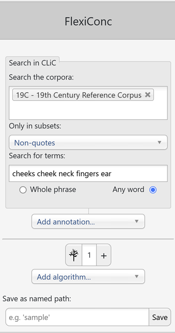
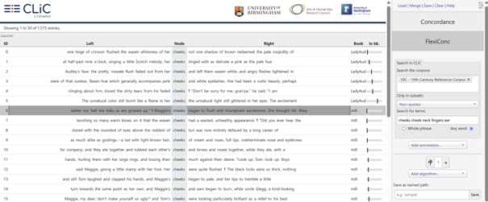
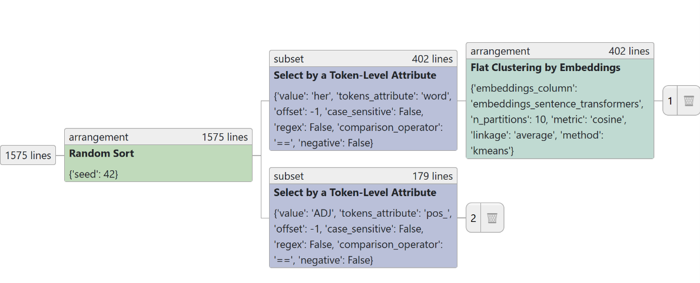
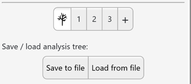
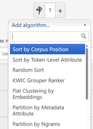
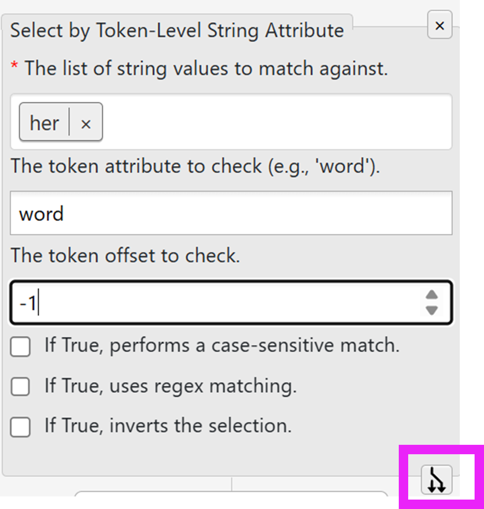
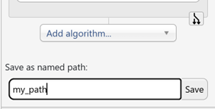
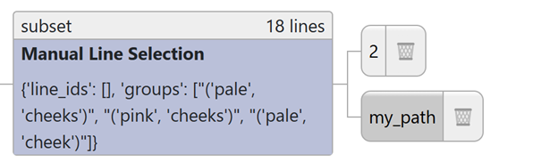
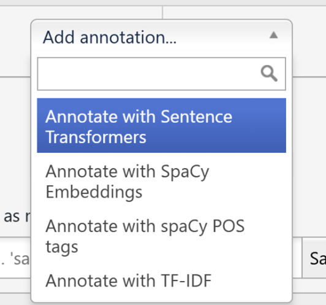
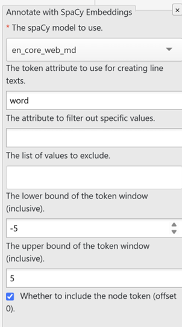

FlexiConc¶
‘FlexiConc’ is a Python library developed to support corpus linguists by supporting the analysis of concordances. CLiC incorporates FlexiConc functionality in a dedicated analysis tab.
Starting FlexiConc¶
After selecting FlexiConc in the sidebar, the initial query window looks identical to the one in the Concordance tab, with some additional buttons underneath.

Fig. 24 Query in FlexiConc mode in CLiC¶
The query options (corpus selection, subsets, search terms, wildcards, whole phrase/any word) work the same as in the Concordance tab.
Search results¶
In the screenshot above, we are searching the 19C corpus of 19th century English novels. We focus on non-quotes – all parts of the text that are not part of a character’s direct speech. Within this subset, the search terms are cheeks, cheek, neck, fingers, and ear. These are examples of body-part nouns that appear in the mid-level frequency range in this corpus. Thus, neither of them is extremely common or infrequent. Searching for any word ensures that all terms are searched separately, rather than searching for the rather nonsensical string “cheeks cheek neck fingers ear” as a sequence. The resulting concordance view looks like this:

Fig. 25 Initial concordance in FlexiConc mode¶
Concordancing strategies¶
FlexiConc takes the query result as input and allows you to perform different steps, which are operationalized as algorithms.
Each FlexiConc algorithm performs an operation that belongs to one of three central categories:
Selecting – focus on specific subsets of concordance lines based on a variety of criteria, including metadata categories and contextual keywords.
Ordering – arrange concordance lines by sorting or ranking them, using numeric preference scores to prioritize those of interest.
Grouping – organize lines into groups by applying explicit partitioning criteria or through clustering based on similarity measures.
Analysis tree¶
FlexiConc organizes the concordancing process in an analysis tree. Algorithms can be applied sequentially in a hierarchical structure, meaning that you can ‘branch off’ the analysis on any level. For instance, you can apply a sorting algorithm to a subset, which results in only that subset being sorted. Alternatively, you can apply the same sorting algorithm to the concordance lines that you obtained the subset from, which would lead to all lines within that view being sorted.
By default, your analysis has one branch, which is started when you run the query, and is represented by the button with the number 1 next to the tree symbol. Clicking on the tree symbol takes you to an overview of the entire analysis tree:

Fig. 26 Analysis tree¶
In this example, we started from the concordance shown in the initial query, which contains 1,575 lines. We applied a random sort – which is an arrangement node (in that it changes the order of lines). From there, the analysis branched off in two directions:
Branch 1is a subset based on select by a token-level attribute. In this case, the concordance view is limited to lines containing the token her in the L1 position (= offset -1). We then applied an arrangement node, flat clustering by embeddings. This is a grouping algorithm that sorts concordance lines into textually similar partitions.Branch 2is also a subset of the concordance. Like in branch 1, it subsets the concordance by select by a token-level attribute. However, in branch 1, the attribute was a specific token (her). In branch 2, we instead use the attribute pos_ as a filtering criterion, which is a part-of-speech tag that was added as an annotation layer to the overall concordance in an annotation step.
Like the selection for her in branch 1, this subset selects based on the L1 position, this time, the selection criterion is that pos_ has the value ADJ. In other words, we are selecting lines where the node is preceded by an adjective.
Clicking on the numbers at the end of each branch takes you to the respective branch, where you can add more algorithms to it.
Saving and loading the tree¶
While you are in the tree view, you will also see a save and a load button, as seen below.

Fig. 27 Save and load buttons for the analysis tree¶
Clicking on save to file initiates a download, where the entire tree
structure is stored as a JSON file.
You can load this file back into FlexiConc to recreate your analysis
at any point. This also allows you to directly share your analysis with
other researchers or students.
Adding algorithms¶
When you are on a branch, clicking on the add algorithm button shows
all available algorithms. You can scroll down or use the search bar to
type an algorithm name.

Fig. 28 Adding an algorithm to the tree¶
Adding a new algorithm below an existing one will create a new node on the same branch.
Clicking on the
plus sign +next to the tree symbol creates a new branch on the top level.By clicking on the
branch symbolat the bottom of a node, you create a new branch below that node. In the example below, the new branch would be initiated containing all steps up to, and including, the algorithmselect by token-level string attribute, but not any steps carried out below.
{kind=link}

Fig. 29 Branching off from an existing branch¶
As we have seen so far, the branches are numbered by default; and the
number automatically counts up in the order of branch creation. This is
a useful default, as the numbering then serves as a record of the order
in which your analysis gradually built up. However, there are cases
where the numbering isn’t enough to keep track of your results. You can
therefore create a named path for any given branch by using the menu
below the Add algorithm button:

Fig. 30 Naming a path¶
Creating a named path will not overwrite your numbered path. Instead, it creates a copy that is stored separately under the name that you chose, and which you can access through the tree view just like a numbered path. After creating a named path, you will stay on the numbered path you have copied.
Named paths are immutable, i.e., you cannot append any algorithms to them.
Named paths are also displayed in the tree view. Below, you can see that
branch 2 and my_path currently share the exact same sequence of
algorithm steps:

Fig. 31 Named path in the tree view¶
Annotations¶
Annotations are automatic analyses of the concordance data that are added to the concordance through some external source of information. Once added, you can use annotations in various algorithms. You can find the annotations in the add annotation toolbar located right below the query window.

Fig. 32 Adding annotation¶
Currently, two types of annotations are available:
Similarity scores calculate the similarity between concordance lines. Three distinct types of similarity annotation are available: sentence transformers, SpaCy embeddings, and TF-IDF score.
Each of these similarity measures offers a range of settings to specify
how the similarities should be calculated. The figure below shows the
options for Annotate with SpaCy Embeddings: in particular, you need
to specify the model and, optionally, the offset if you want to
obtain similarities for a fixed context window.

Fig. 33 Options for adding annotation with SpaCy embeddings¶
Similarity measures can be used in the Flat clustering by embeddings algorithm, which creates groups based on the similarity scores by applying k-means or agglomerative clustering.
Part-of-speech (POS) tags are the second type of annotation, provided by spaCy models. POS tags are labels that provide a grammatical analysis of each token in the text, e.g. identifying words as nouns or adjectives. In contrast to the similarity annotations, POS tags are not comparisons that result in a score. Instead, they can be used in any algorithm that operates on token-level attributes. In other words, you can use these tags much in the same way that you might use the token itself in a specific position. For example, the tree shown earlier contains a select algorithm with the condition that the token left to the node has to be an adjective.